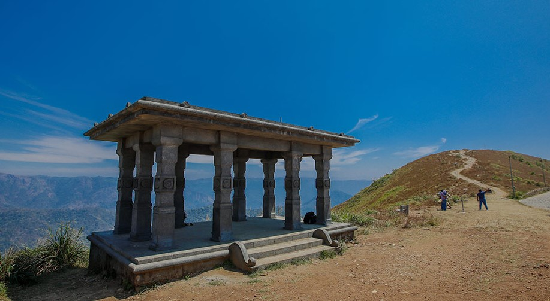

In the 16th century the territory was under the rule of Changanacherry kings and was uninhabited. In 1756, the King of Travancore conquered Changanacherry, and brought the place under his supremacy. A Church Mission Society missionary, Henry Baker, started coffee plantations, and under the regency of Sri Moolam Thirunal these became tea plantations. Under the British Raj in India, Kuttikkanam became an up-market resort. Since at first there was no road but only a pathway, the British started the Aerial Ropeway Ltd, Travancore state's first public limited company. The summer palace of the Travancore kings was located in Kuttikkanam. During the British period and after, manpower was brought to Kuttikkanam from various parts of Kerala and Tamil Nadu. The descendants of these migrant workers constitute the major part of the population of Kuttikkanam.
WHAT is KUTTIKKANM ?
